Preserved 1202 previous PNGs and 1202 metadata files byte for byte.
Actual exports and map assemblies
worldbuilder-expansion02-village
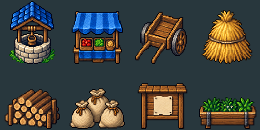
Exact native PNGs in source row-major order; no painting or seam correction
worldbuilder-expansion02-road
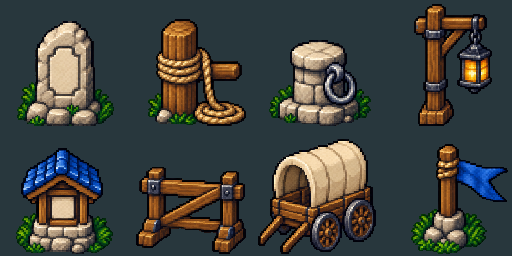
Exact native PNGs in source row-major order; no painting or seam correction
worldbuilder-expansion02-camp
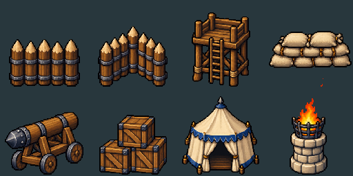
Exact native PNGs in source row-major order; no painting or seam correction
worldbuilder-expansion02-river
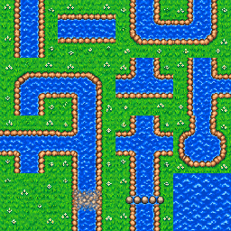
Exact native PNGs in source row-major order; no painting or seam correction
worldbuilder-expansion02-terrace
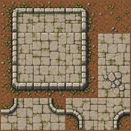
Exact native PNGs in source row-major order; no painting or seam correction
river-crossing
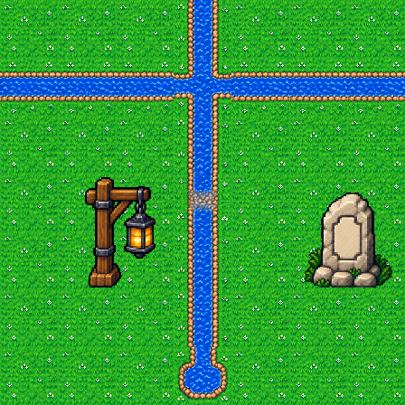
Actual exported tiles and props at 64 PPU; no edge correction
raised-terrace-camp
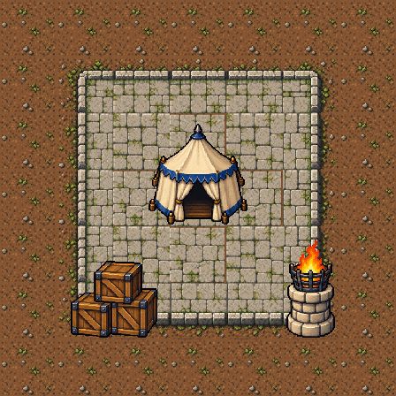
Actual exported tiles and props at 64 PPU; no edge correction
terrace-inner-corners
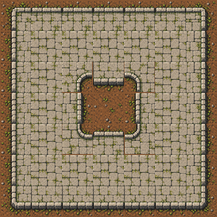
Actual exported tiles and props at 64 PPU; no edge correction
Native individual assets
village-expansion02/stone-well 128×128 ·64 PPU ·2 world unitsvillage-expansion02/market-stall 128×128 ·64 PPU ·2 world units
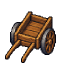
village-expansion02/handcart 128×128 ·64 PPU ·2 world unitsvillage-expansion02/haystack 128×128 ·64 PPU ·2 world unitsvillage-expansion02/woodpile 128×128 ·64 PPU ·2 world units
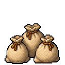
village-expansion02/grain-sacks 128×128 ·64 PPU ·2 world units
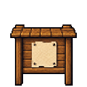
village-expansion02/notice-board 128×128 ·64 PPU ·2 world units
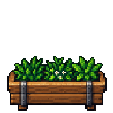
village-expansion02/planter-trough 128×128 ·64 PPU ·2 world unitsroad-expansion02/stone-milestone 128×128 ·64 PPU ·2 world unitsroad-expansion02/ferry-post 128×128 ·64 PPU ·2 world units
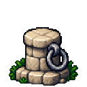
road-expansion02/mooring-bollard 128×128 ·64 PPU ·2 world unitsroad-expansion02/lantern-post 128×128 ·64 PPU ·2 world units
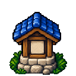
road-expansion02/roadside-shrine 128×128 ·64 PPU ·2 world units
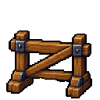
road-expansion02/road-barrier 128×128 ·64 PPU ·2 world units
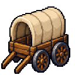
road-expansion02/supply-wagon 128×128 ·64 PPU ·2 world unitsroad-expansion02/survey-marker 128×128 ·64 PPU ·2 world unitscamp-expansion02/palisade-straight 128×128 ·64 PPU ·2 world unitscamp-expansion02/palisade-corner 128×128 ·64 PPU ·2 world units
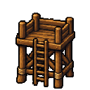
camp-expansion02/watch-platform 128×128 ·64 PPU ·2 world units
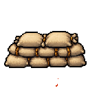
camp-expansion02/sandbag-stack 128×128 ·64 PPU ·2 world unitscamp-expansion02/siege-ram 128×128 ·64 PPU ·2 world unitscamp-expansion02/supply-crates 128×128 ·64 PPU ·2 world unitscamp-expansion02/command-tent 128×128 ·64 PPU ·2 world unitscamp-expansion02/signal-brazier 128×128 ·64 PPU ·2 world units
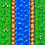
river-expansion02/river-ns 64×64 ·64 PPU ·1 world units
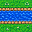
river-expansion02/river-ew 64×64 ·64 PPU ·1 world units
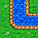
river-expansion02/river-bend-ne 64×64 ·64 PPU ·1 world units
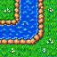
river-expansion02/river-bend-nw 64×64 ·64 PPU ·1 world units
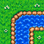
river-expansion02/river-bend-se 64×64 ·64 PPU ·1 world units
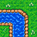
river-expansion02/river-bend-sw 64×64 ·64 PPU ·1 world units
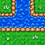
river-expansion02/river-t-n 64×64 ·64 PPU ·1 world units
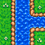
river-expansion02/river-t-e 64×64 ·64 PPU ·1 world units
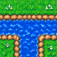
river-expansion02/river-t-s 64×64 ·64 PPU ·1 world units
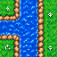
river-expansion02/river-t-w 64×64 ·64 PPU ·1 world units
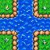
river-expansion02/river-cross 64×64 ·64 PPU ·1 world unitsriver-expansion02/river-source 64×64 ·64 PPU ·1 world units
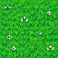
river-expansion02/grass-center 64×64 ·64 PPU ·1 world units
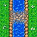
river-expansion02/river-ford 64×64 ·64 PPU ·1 world units
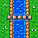
river-expansion02/river-stepping-stones 64×64 ·64 PPU ·1 world unitsriver-expansion02/water-center 64×64 ·64 PPU ·1 world units
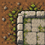
terrace-expansion02/terrace-nw 64×64 ·64 PPU ·1 world units
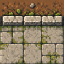
terrace-expansion02/terrace-n 64×64 ·64 PPU ·1 world units
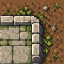
terrace-expansion02/terrace-ne 64×64 ·64 PPU ·1 world units
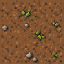
terrace-expansion02/soil-center 64×64 ·64 PPU ·1 world units
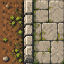
terrace-expansion02/terrace-w 64×64 ·64 PPU ·1 world units
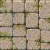
terrace-expansion02/terrace-center 64×64 ·64 PPU ·1 world units
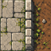
terrace-expansion02/terrace-e 64×64 ·64 PPU ·1 world units
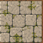
terrace-expansion02/terrace-center-alt 64×64 ·64 PPU ·1 world units
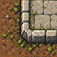
terrace-expansion02/terrace-sw 64×64 ·64 PPU ·1 world units
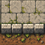
terrace-expansion02/terrace-s 64×64 ·64 PPU ·1 world units
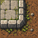
terrace-expansion02/terrace-se 64×64 ·64 PPU ·1 world units
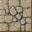
terrace-expansion02/rubble-floor 64×64 ·64 PPU ·1 world units
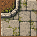
terrace-expansion02/terrace-inner-nw 64×64 ·64 PPU ·1 world units
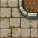
terrace-expansion02/terrace-inner-ne 64×64 ·64 PPU ·1 world units
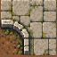
terrace-expansion02/terrace-inner-sw 64×64 ·64 PPU ·1 world units
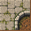
terrace-expansion02/terrace-inner-se 64×64 ·64 PPU ·1 world units
Limits
Candidate artwork; original-reference fidelity and seamless joins require visual approval
Sprite scale is shared across each sheet; alpha anchors and exact crop rectangles recorded in manifest
No Unity import, collision, RuleTile or runtime validation is claimed